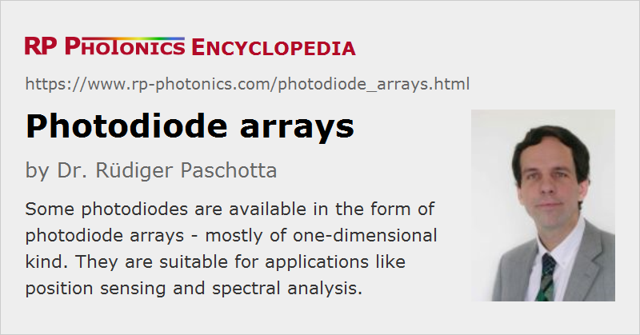

Photodiode Arrays
Definition: typically linear arrays of photodiodes, provided as compact devices
German: Photodioden-Zeilen
Categories: photonic devices, light detection and characterization, optoelectronics, optical metrology
How to cite the article; suggest additional literature
Author: Dr. Rüdiger Paschotta
Photodiodes are often used as single devices, with a single photodiode being integrated in one housing. However, there are also photodiode arrays, where sometimes only a few, but typically hundreds or even thousands of photodiodes are placed on a single chip. Typically, such arrays are one-dimensional, but there are also two-dimensional ones of rectangular or even square shape.
A photodiode chip may contain additional electronic elements, for example for the amplification of the photocurrent signals. In the simplest case, a chip only contains the photodiodes, where sometimes all cathodes are connected to a common pin and the anodes to separate pins.
While probably most photodiode diode arrays do not contain additional optical elements, apart possibly from an anti-reflection coating, some are equipped with microlenses, for example. Those can allow one to collect more light from a certain direction.
More general terms are photodetector arrays and focal plane arrays. In principle, other types of photodetectors can be integrated, although photodiodes are most common.
There are also specialized driver circuits which can be connected to photodiode arrays.
Parallel Readout
In contrast to a CMOS or CCD sensor chip, the signals from individual photodiodes are usually read out in a parallel way, i.e., all of them simultaneously with separate wires. This approach allows for signal readout with very high speeds.
Applications of Photodiode Arrays
In the following, some typical applications of photodiode a arrays are explained:
- One can use such a device as a position sensor. The linear position of a light beam (e.g. a laser beam) hitting the array can be inferred from the distribution of photocurrents. For small ranges of position, a simple balanced detector consisting of two diodes could be sufficient, but a long photodiode array allows for position measurements in a much larger range.
- By scanning the “viewing direction” of a one-dimensional array, one may acquire two-dimensional images – possibly with a speed which is higher than when using two-dimensional CMOS sensors, for example. Alternatively, one may use a two-dimensional photodiode array.
- In combination with a diffraction grating (and possibly some additional optics such as a lens), a photodiode array can function as an optical spectrograph: different wavelength components are sent to different diodes. This principle can be used in compact apparatuses for optical coherence tomography, for example.
- By combining such an array with a scintillator crystal, one can obtain a spatially resolving detector for X-rays or gamma radiation, as required e.g. for industrial inspection purposes.
Important Properties of Photodiode Arrays
Depending on the application, different properties of a photodiode array can be relevant:
- The type of photodiode essentially determines the obtained spectral response. Silicon diodes are most common and are useful mostly for visible light. Others are based on gallium arsenide (GaAs) or germanium (Ge) photodiodes for infrared applications.
- Their size and quantum efficiency determine the responsivity and (together with electronic noise sources) the sensitivity, i.e., how low light levels can be detected. For highest responsivities, arrays with avalanche photodiodes are available. It can also be important how close together the active areas are, because any “dead space” between them leads to the loss of detectable light.
- For some applications, a high uniformity of responsivity and a low cross-talk between pixels are essential.
- A high readout speed may depend on the use of fast photodiodes with low electrical capacitance.
- Photodiode arrays are available with a wide range of housings, e.g. with PCB mounts, DIP or SMD/SMT type.
Suppliers
The RP Photonics Buyer's Guide contains 5 suppliers for photodiode arrays.
Questions and Comments from Users
Here you can submit questions and comments. As far as they get accepted by the author, they will appear above this paragraph together with the author’s answer. The author will decide on acceptance based on certain criteria. Essentially, the issue must be of sufficiently broad interest.
Please do not enter personal data here; we would otherwise delete it soon. (See also our privacy declaration.) If you wish to receive personal feedback or consultancy from the author, please contact him e.g. via e-mail.
By submitting the information, you give your consent to the potential publication of your inputs on our website according to our rules. (If you later retract your consent, we will delete those inputs.) As your inputs are first reviewed by the author, they may be published with some delay.
See also: photodiodes, photodetectors, position-sensitive detectors, focal plane arrays
and other articles in the categories photonic devices, light detection and characterization, optoelectronics, optical metrology
|  |
If you like this page, please share the link with your friends and colleagues, e.g. via social media:
These sharing buttons are implemented in a privacy-friendly way!